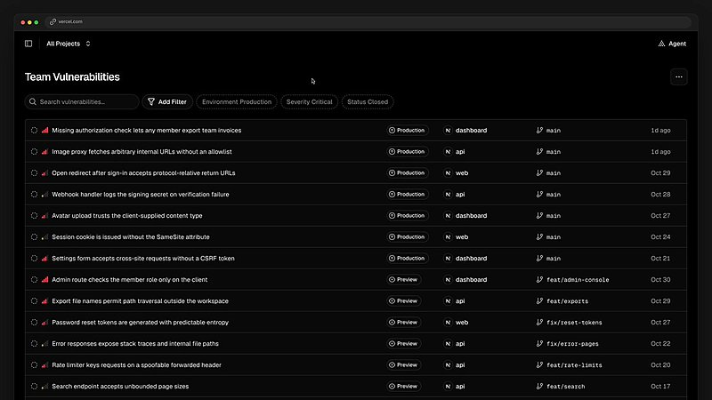

AI 日报 · 11月5日
代码 Agent 扩张后，验证、安全和权限成为交付主线
OpenAI 披露 Linux 内核安全研究的分阶段验证结果，并宣布拟收购 Pierre 强化 Codex 的代码审阅工具。Claude 的组织级连接授权与 Builder 讨论把权限边界带回日常工作；Nebius CTO 访谈提醒基础设施仍受存储、电力与工程执行约束。
安全验证
代码审阅
组织授权
AI 基础设施
4
Builder 动态
3
今日上榜项目
3
官方原文
1
公开视频
今日要点
OpenAI 公布一条自动发现、验证和补丁生成流水线
官方称，2026 年 10 月的一次受控研究得到 2,308 个候选发现、动态复现 1,724 个问题，并围绕 948 个不同的本地提权漏洞形成利用证据与候选补丁，API 费用约 121 万美元。数字来自其研究环境，补丁仍须研究人员及维护者审查。
OpenAI 宣布拟收购 Pierre Computer Company
Pierre 的 Trees 与 Diffs 库已用于 Codex 应用中的文件导航和差异审阅。OpenAI 计划在交易完成后继续拓展代码存储和审阅工作流；交易仍受常规交割条件及监管批准约束。
深度对话
Nebius CTO：AI 云的瓶颈不只是 GPU
Unsupervised Learning 于 11 月 2 日发布对 Nebius CTO Danila Shtan 的访谈。以下依据原频道视频与 follow-builders 逐字稿整理；客户比例和市场判断均为受访者自述。
存储吞吐会与算力一起成为约束
Shtan 回顾，团队早期低估了训练负载对共享存储吞吐和延迟的要求；提供 AI 云服务还需处理虚拟化、网络和机架协同。
开放模型推理仍有优化空间
他称约 95% 的 Nebius 客户运行的是修改、微调或压缩过的开放模型，而非直接使用原版。该比例只反映其客户群，不代表整个市场。
预填充与解码分离取决于负载
他认为相关架构讨论很多，实际部署要看客户流量、机架互联与成本，不能当作对所有推理任务都有效的固定答案。
落地还受电力与项目执行限制
访谈提到变压器交付周期、数据中心建设和复杂基础设施项目管理；硬件供给之外，执行能力也影响扩张速度。
官方原文
官方原文：审阅、补丁与组织连接
OpenAI｜Linux 内核安全流水线研究
研究流程依次筛选审计目标、静态发现、隔离环境动态复现、测试可利用性和生成补丁，最后由人类安全研究员复核。文中 948 指去重后的本地提权漏洞，不能等同于已被内核维护者接受的补丁数。
OpenAI｜拟收购 Pierre 扩展 Codex 工具
官方表示 Pierre 的开源项目将继续开源，Code Storage 客户在交易完成后可继续使用服务。收购尚未交割，产品整合是未来计划。
Claude｜组织级连接授权说明
Team 和 Enterprise 管理员可为连接器配置受管授权，成员首次登录时继承组织授予的访问。文档区分已普遍可用的 IdP 方式和仍在测试的 Claude 签发方式；访问范围仍受角色、连接服务和令牌管理约束。
已检查 feeds.json 的四条 RSS；截至 11 月 5 日上午未见当天新条目。下列官方信息按原文发布日期与更新状态标注，不把旧 RSS 条目冒充今日新闻。
Builder 动态
从自动批准到持续审阅，控制点向系统移动
Boris Cherny｜连接器由组织预先授权
Anthropic 的 Boris Cherny 称，Team 和 Enterprise 管理员可预设公司插件，成员首次使用时自动连接。官方帮助文档进一步说明角色权限、身份来源和撤销方式，自动连接并不意味着无范围限制。
Guillermo Rauch｜每次提交进入安全审阅
Vercel CEO 推介其安全 Agent，称已在内部自动审阅代码。Vercel 官方产品说明写明 Security Review 在启用后扫描连接仓库的每次推送，修复仍需用户许可；效果评价是发帖者自述。

Cat Wu｜回看 Claude Code 权限变化
离开 Anthropic 的 Cat Wu 回忆，Claude Code 早期用户逐项批准权限，后来越来越多工作交由自动批准处理，并能承担大型迁移。她描述的是产品与使用方式的变化，并非对所有任务安全性的证明。
Sam Altman｜强调人类保留控制权
OpenAI CEO 在原帖中主张，人不应把未来控制权交给超级智能，并认为这一要求应约束 AI 进展。这是其价值立场，不是已经实现的技术保证。
GitHub Trending
语义上下文、审阅工具与工程技能


取 11 月 5 日 GitHub Trending 当时榜单，避开近三期重点项目；星标、分叉及语言为本次 GitHub API 快照。功能按仓库 README 描述，未独立测评。
今日思考
OpenAI 的安全研究把候选发现、复现、可利用性和补丁分开报告，说明每一步需要不同证据。代码审阅工具和组织级连接授权扩大了 Agent 的操作范围，也让权限范围、审计记录与最终复核更重要。Nebius 的访谈提醒，软件层面的自动化最终仍要落在存储、电力和工程执行之上。今日一问：你的 Agent 完成任务时，除了结果，还会留下什么可独立复核的证据？
今天可做：为一类高风险任务定义三道交接：最小权限、可复现的验证记录、明确的人工签字；再用一例失败结果检查这些交接是否真的起作用。
参考来源